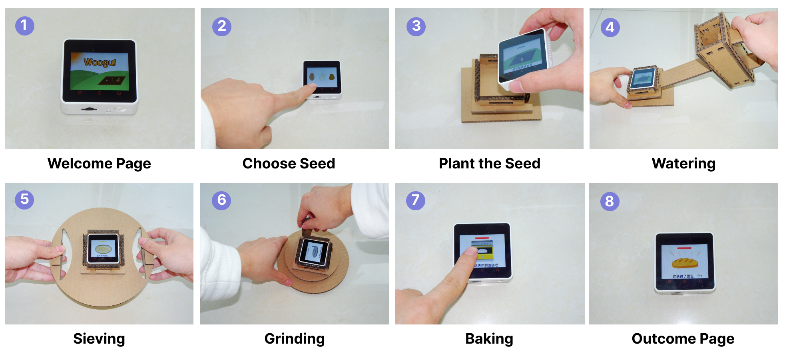
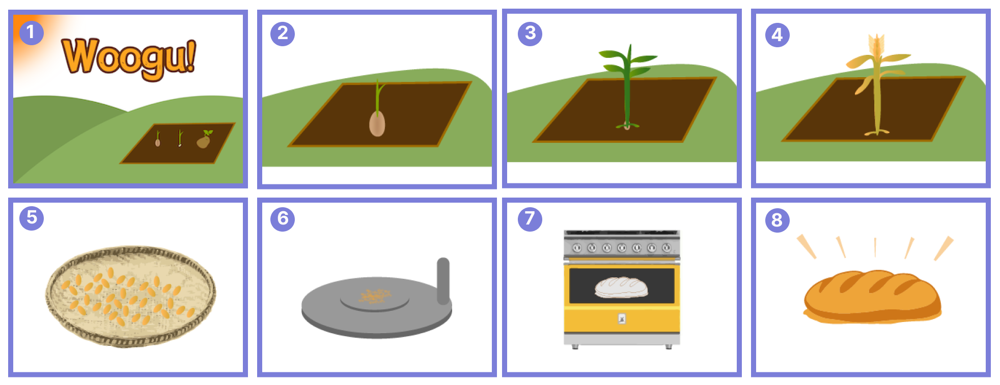
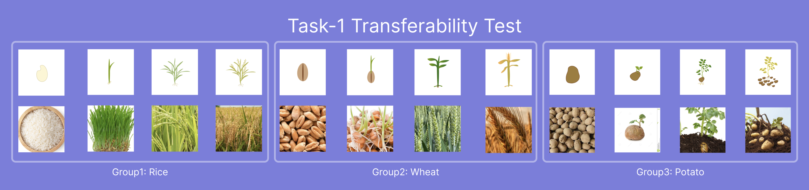
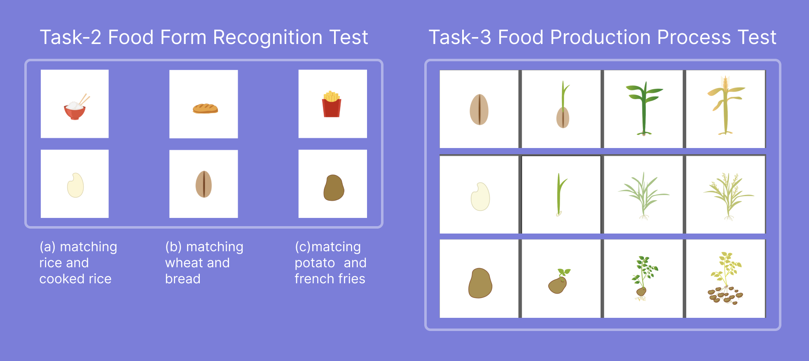

WooGu
An Embodied Tangible User Interface for Supporting Children to Learn Farm-to-Table Food Knowledge
IDC '23 | Interaction Design and Children Conference | Chicago, IL, USA
An Embodied Tangible User Interface for Supporting Children to Learn Farm-to-Table Food Knowledge
IDC '23 | Interaction Design and Children Conference | Chicago, IL, USA
Food is essential for human health, growth, and development. However, children need more learning materials and motivation to receive food literacy education or know the fundamental food processes from farm to table. In this work, we explored the design of a prototype named WooGu with tangible user interfaces (TUI) and embodied interactions, which aims to improve young children's food literacy.
WooGu presents three design features: a cube displaying user interfaces, step-by-step tasks guiding children to learn food from farm to table, and hands-on props made by cardboard empowering embodied interactions. Evaluated with families in a pilot test, WooGu significantly improved children's farming knowledge, engagement, and attitudes towards agriculture. The study also found that WooGu fostered a deeper appreciation for farming, with some children expressing a desire to innovate agricultural practices.
The name "WooGu" was named after the Chinese words for "five grains" (五谷), referring to five traditional grains—rice, broom corn millet, grain, wheat, and bean—as well as being a general term for food. The name implies the importance and necessity for children to learn the process of how food is planted from seeds, grown into fruits, and finally produced and offered on the table.

Figure 1: The user journey of WooGu
WooGu implements essential steps representing food production in three stages: seeds-planting and cultivating, processing, and cooking. Children first plant seeds and cultivate them, then process the fruits using cardboard props, and finally follow recipes to understand culinary steps.
The core of WooGu is an M5Stack Core2 cube with user interfaces providing visual, audio, and tactile multi-sensory feedback. The visuals show growing, processing, and cooking stages of wheat, rice, and potato. Audio instructions guide children, and the cube vibrates when tasks are completed.
WooGu's third design feature is hands-on cardboard props enabling children to simulate embodied farming, processing, and cooking behaviors. Props include a watering can, a siever, and a stone mill—allowing children to physically engage with the learning process.
WooGu implements three commonly-eaten starch foods: rice, wheat, and potatoes, and provides cooking recipes for rice, bread, and french fries, accordingly.

Figure 2: (1) Homepage. (2-3) Wheat grows. (4) Wheat ripens. (5) Harvest Wheat and put it into the siever. (6) Grind wheat into flour. (7) Put the dough into the oven. (8) Bake the bread.
We recruited three children (2 males and 1 female, aged 6 to 8, with an average age of 7) and their parents in a pilot user study. All three children have learned food-related knowledge before through various means, such as learning from educational toys or games, verbal teaching, and documentation.
We collected data from four sources: a questionnaire for demographic information, pre/post-study knowledge test for evaluating learning outcomes, observation and recorded videos for analyzing users' behavior, and semi-structured interviews to understand user experience better.

Figure 3: Cards used in Task 1—12 cards showcasing different forms of food from seeds to fruit (rice, wheat, and potatoes)

Figure 4: Left cards for food form recognition test; Right cards for Food Production Process Test
During the pre-test, specifically the seed recognition and matching test, all three children exhibited an 80% accuracy rate. However, in the test assessing children's capacity to explain the process of making rice, potato, and bread, all three children achieved only a 20% accuracy rate.
After interacting with WooGu, children demonstrated significant improvement in their food-related knowledge and became capable of providing accurate responses to questions about food knowledge spanning from farm to table.
"Now I know where bread comes from. It is wheat first and then process it to be flour via siever and stone mill. Finally, we make it into the dough and bake it in the oven to cook bread."
"I have watched short videos about sievers and stone mills on TikTok before, but I never used them in my life. Nevertheless, now I know how to use them, and producing food is truly complicated."
All three parents expressed that they liked the idea of using TUI to motivate their children to learn farm-to-table food knowledge. They noted that their children primarily acquired knowledge from online videos or schools through visual and textual formats, which may not fully capture the tactile and sensory elements of the processes involved.
"I think educating children the process of food from farm to table is very essential to my child because it can broaden his range of knowledge and understand why we eat."
"My child lacks hands-on experiences and abilities... But when he played WooGu just now, I think he behaved proactively during interactions, and he was thinking about how to tackle the challenges."
WooGu is an interactive system comprising a small screen and a set of hands-on tools to support children's learning about food production from farm to table. Our approach offers three key advantages over conventional screen-based interactive games and food toys:
This research contributed to the Human-Food Interaction (HFI) area and provided a novel way of learning food literacy for children through embodied interactions.
Hongni Ye*, Tong Wu*, Lawrence H Kim, Min Fan, Xin Tong†
WooGu: Exploring an Embodied Tangible User Interface for Supporting Children to Learn Farm-to-Table Food Knowledge
In Interaction Design and Children (IDC '23), June 19–23, 2023, Chicago, IL, USA. ACM, New York, NY, USA, 7 pages.
* Both authors contributed equally. † Corresponding author


We would like to thank Duke Kunshan University FSTA Grant (23UL017006) and the National Social Science and Arts Foundation (22BG137) for funding this project.